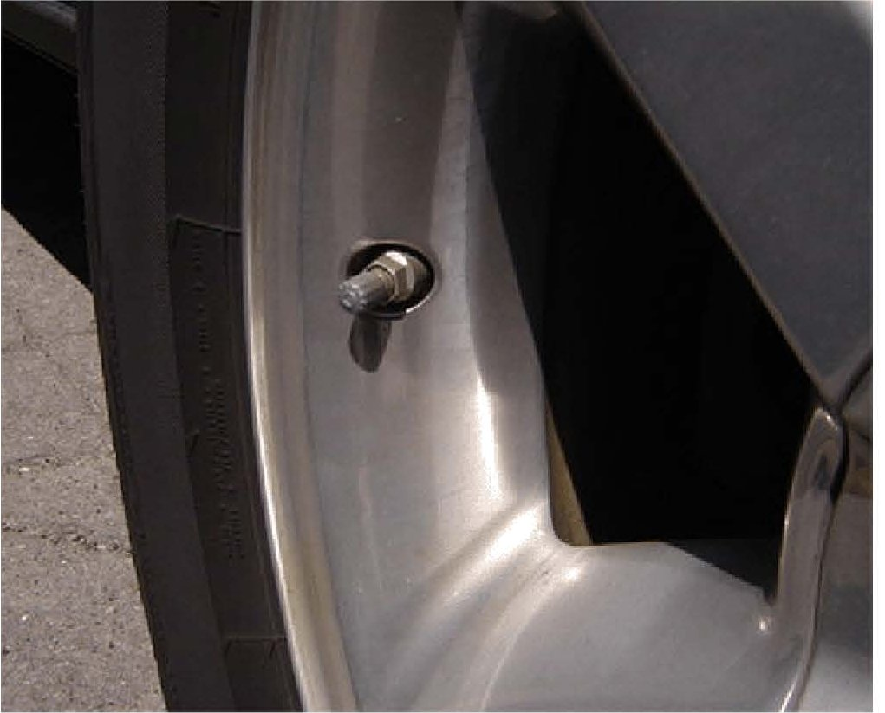
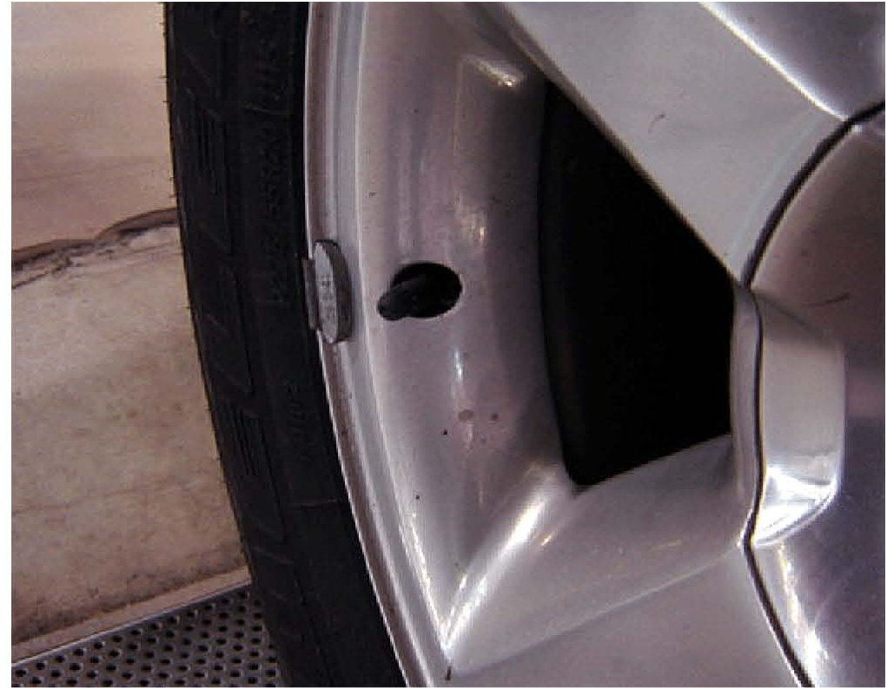
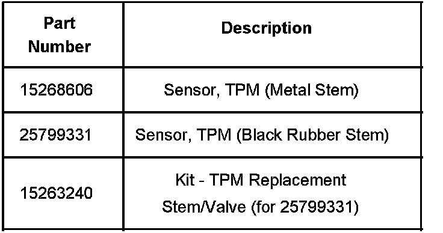

Tire Monitor System - TPM Sensor Valve Stem Information
Bulletin No.: 07-03-10-011Date: September 20, 2007
INFORMATION
Subject:
Information on TPM Sensor Valve Stem Appearance (Metal vs. Rubber Stem) and Available Substitute Sensor
Models:
2007 Cadillac Escalade, Escalade ESV
2007 Chevrolet Suburban, Tahoe
2007 GMC Yukon, Yukon XL
TPM Visual Identification

The 2007 Utility models listed above manufactured prior to October 2006 were built with tire pressure monitoring (TPM) sensors that have an aluminum valve stem and an externally visible retaining nut as shown above. This first design sensor has a valve stem that is integral to the body of the sensor. This first design sensor is no longer available for service.

To improve serviceability, vehicles built after October 2006 were built with TPM sensors that have a replaceable black rubber valve stem, P/N 25799331, held on by a small TORX(R) fastener as shown above. A service kit is available, P/N 15263240, to service the black rubber valve individually from the sensor, extending the useful life of the sensor. These second design sensors are physically and electronically interchangeable.
TPM Appearance Concerns and Available Substitute Sensor
Customers of vehicles originally equipped with the metal valve stem TPM sensor may object to the visual difference in the replacement black rubber style of sensor. In these cases, it is acceptable to alternately use TPM sensor, P/N 15268606. This sensor has a metal stem visually very similar to the original style used for pre-October 2006 builds. This sensor does not appear in the electronic Parts Catalog as applicable for these vehicles, however it is electrically compatible and will function correctly in this application.

Parts Information

Disclaimer